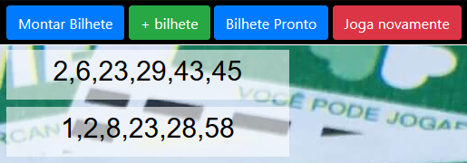
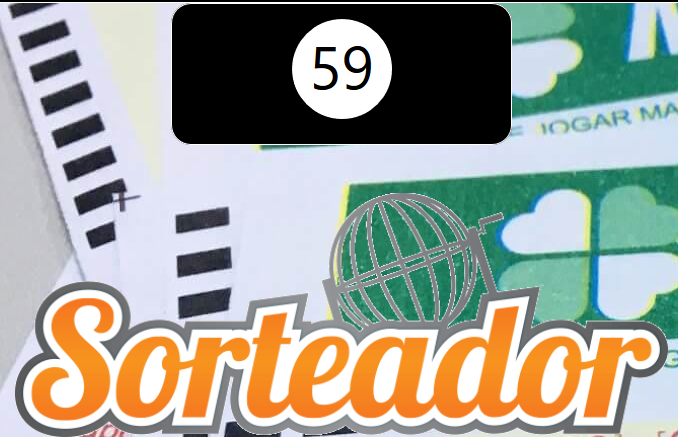
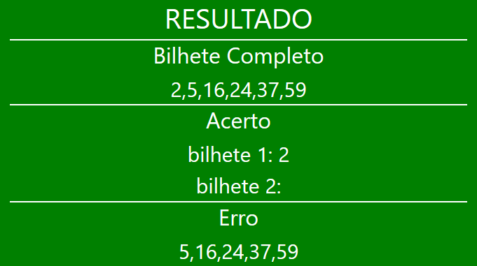

Para ganhar o prêmio máximo da Mega-Sena, é necessário acertar a sena, o que significa obter coincidência entre seis dos números apostados e os seis números sorteados, de um total de sessenta dezenas (de 01 a 60), independentemente da ordem da aposta ou da ordem do sorteio.
Primeiramente deve-se escolher o seu bilhete clicando nos botões

Podendo montar o bilhete ou pegar um pronto. Cada bilhete sera aceito 6 numeros, podendo ter no maximo 2 bilhetes que serão mostrados nas caixas abaixo dos botões. Se escolher montar um bilhete devera digitar um numero por vez na caixa e clicar no OK
Para sortear um numero clique na imagem sorteador, o numero sorteado ira aparecer acima na caixa preta, sorteando 1 numero por clique ate ser sorteado os 6 numeros

Assim que o ultimo numero for sorteado, voce podera conferir os numeros sorteados,os acertos e erros.
